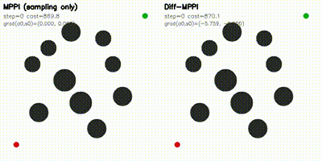
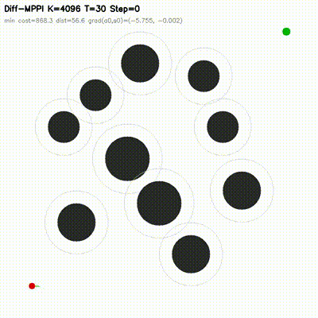
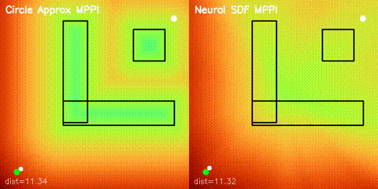
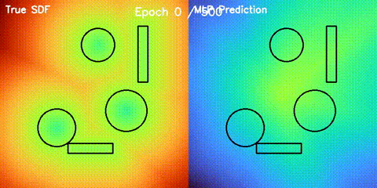
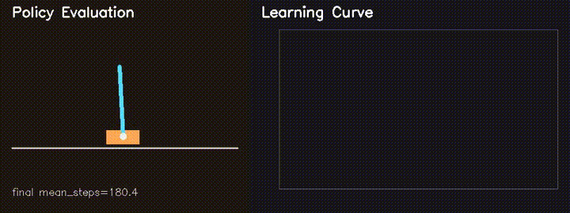
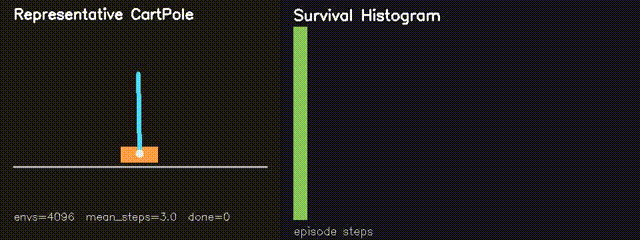
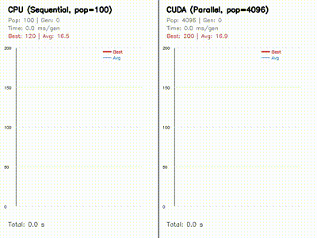
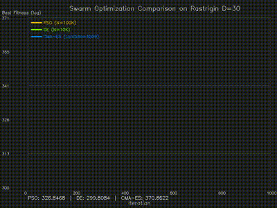

GPU implementations of classic robotics algorithms plus newer research-style additions: Diff-MPPI, neural SDF navigation, GPU neuroevolution, MiniIsaacGym, point-cloud processing, and large-scale swarm optimization.
feedback_mppi_ref successUpdated from the repository state on 2026-04-05.
At matched 1.0 ms budget on dynamic_slalom,
diff_mppi_3 is the only successful controller (dist 1.91)
across 6 non-hybrid baselines. The strongest non-hybrid baseline
feedback_mppi_fused reaches 10.30, while vanilla MPPI stays at 14.16.
On 7dof_dynamic_avoid at K=512, diff_mppi_3 reaches
success=1.00 at 0.84 ms, while feedback_mppi_ref reaches
0.75 at 4.01 ms. The hybrid controller is 4.8x faster and more reliable
on this 14-dimensional manipulation task.
A two-rate feedback_mppi_faithful variant combining released current-action gains
with stride-2 replanning fails even at K=8192 (2.1 ms), confirming
that the autodiff refinement provides value that pure feedback cannot replicate.
The repository now learns 2D signed distance fields with a GPU MLP and uses them for both potential-field planning and MPPI rollouts on non-circular obstacle layouts.
Side-by-side GIFs against circle-based approximations
GPU REINFORCE improves MiniIsaac CartPole survival from about 82.6 to
180.4 steps, while neuroevolution and swarm solvers run thousands of candidates in parallel.
The strongest current story is the hybrid MPPI plus short autodiff refinement line.
| Benchmark | Comparison | Current result |
|---|---|---|
dynamic_slalom, matched 1.0 ms |
mppi vs 5 feedback baselines vs diff_mppi_3 |
Only diff_mppi_3 succeeds (1.91). Best non-hybrid: feedback_mppi_fused at 10.30. |
7dof_dynamic_avoid, K=512 |
diff_mppi_3 vs feedback_mppi_ref |
diff_mppi_3: success=1.00 @ 0.84 ms. feedback_mppi_ref: 0.75 @ 4.01 ms. |
dynamic_crossing, matched 1.0 ms |
mppi vs feedback_mppi_ref vs diff_mppi_3 |
3.02 vs 1.93 vs 1.85 final distance |
arm_static_shelf, K=256 |
mppi vs feedback_mppi_ref |
0.00 / 0.23 vs 1.00 / 0.15 success / final distance |
dynamic_bicycle, low budget |
dynbike_slalom K=32 |
mppi: 0.75 / 12.60, diff_mppi_1: 1.00 / 2.24 |


These are useful repository-level results even though Diff-MPPI is the current main research thread.

GPU MLP SDF learning, potential-field planning, and MPPI on non-circular obstacles.

Learned signed distance field against the analytic reference field.

GPU REINFORCE improves average survival from about 82.6 to 180.4 steps.

Thousands of nonlinear CartPole environments simulated in parallel on GPU.

Parallel evolution of 4096 neural policies with replay and learning-curve comparisons.

GPU PSO, DE, CMA-ES, and ACO with animated convergence comparisons.
Representative numbers from the current synthetic-room benchmark.
| Points | Operation | CPU | GPU | Speedup |
|---|---|---|---|---|
| 2,000 | Statistical Filter | 388.79 ms | 0.79 ms | 492.3x |
| 2,000 | Normal Estimation | 574.33 ms | 0.96 ms | 599.0x |
| 20,000 | RANSAC Plane | 142.38 ms | 1.04 ms | 136.3x |